<p-confirmDialog [closable]="false" key="morph-delete"/>

<p-toolbar [style]="{'border':'none'}">
    <p-button icon="pi pi-plus" (onClick)="openAddModal()" pTooltip="Добавить определение" appendTo="body" tooltipPosition="top" [showDelay]="500"></p-button>
    <p-button icon="pi pi-pencil" (onClick)="openEditModal()" [disabled]="disableButtons" pTooltip="Редактировать определение" appendTo="body" tooltipPosition="top" [showDelay]="500"></p-button>
    <p-button icon="pi pi-copy" (onClick)="openCloneModal()" [disabled]="disableButtons" pTooltip="Добавить на основе текущего" appendTo="body" tooltipPosition="top" [showDelay]="500"></p-button>
    <p-button icon="pi pi-sync"></p-button>
    <p-button icon="pi pi-check-square" (onClick)="markAsRule()" [disabled]="disableButtons" pTooltip="Отметить определение как правило" appendTo="body" tooltipPosition="top" [showDelay]="500"></p-button>
    <button pButton class="p-button-icon-only p-ripple custom-button-size" [disabled]="disableButtons" pTooltip="Выбрать определение для всех форм" appendTo="body" tooltipPosition="top" [showDelay]="500">
        
    </button>
    <button pButton class="p-button-icon-only p-ripple custom-button-size" [disabled]="disableButtons" pTooltip="Убрать определение для всех форм" appendTo="body" tooltipPosition="top" [showDelay]="500">
        
    </button>
    <p-button severity="danger" icon="pi pi-trash" (onClick)="confirmDelete()" [disabled]="disableButtons" pTooltip="Удалить определение" appendTo="body" tooltipPosition="top" [showDelay]="500"></p-button>
</p-toolbar>

<!-- <p-dialog  header="Definitio formae"  [modal]="true" [(visible)]="addModalVisible" [style]="{'height':'100%', 'width':'60%'}">
    <app-create-element></app-create-element>
</p-dialog> -->